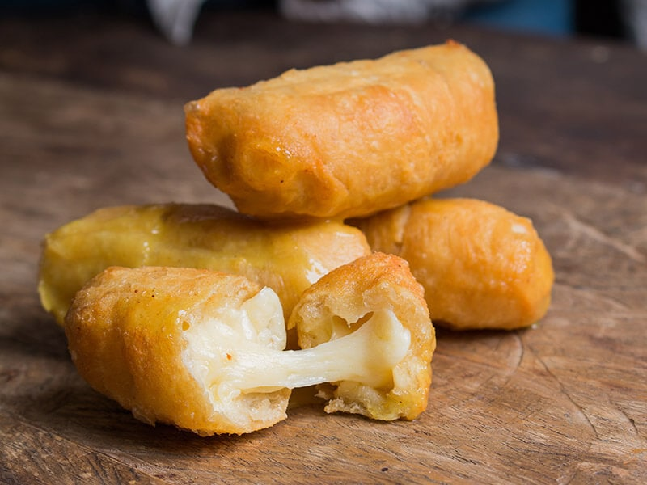

the venezuelan party dish
Ingredients
- 10 ounces all-purpose flour (about 2 cups)
- 1 teaspoon Kosher salt
- 6 tablespoons cold butter, cut into 1/4-inch cubes
- 1 large egg, lightly beaten
- 6 tablespoons cold water, plus more as needed
- 12 ounces queso blanco or queso de frier, cut into slices 1/2-inch x 1/2-inch x 2 1/2-inch
- Peanut oil, for frying
Recipe Instructions
- Place flour and salt in the workbowl of a food processor fitted with a steel blade; pulse to combine. Sprinkle butter evenly over flour and pulse until butter is cut into pieces slightly smaller than a pea, about 8 one-second pulses. Transfer dough to a large bowl..
- Add in egg and water. Using a rubber spatula, press dough against side of bowl until it forms into a ball. If dough is not fully forming, add additional water one tablespoon at a time until it comes together. Press dough into a disc, wrap tightly in plastic wrap, and rest in refrigerator for 30 minutes.
- Unwrap dough and place on a lightly floured surface. Roll out into a square 1/8-inch thick. Cut off edges to create a 12-inch square. Cut square into strips 3/4-inch wide.
- Take one strip of dough and drape end over top of one cheese slice. Wrap entire cheese slice in dough on a diagonal, overlapping dough. Cover bottom of cheese slice in dough and pinch edges close to fully seal. Repeat with remaining cheese slices..
- Fill a cast iron skillet with 3/4-inch of oil. Heat oil to 400°F (204°C) over high heat. Place tequeños in oil and fry until crust is golden brown and blistery, 3 to 5 minutes, turning halfway through. Transfer tequeños to a paper towel-lined plate, let cool for 1 to 2 minutes, then serve immediately.
return to top
Return to main page